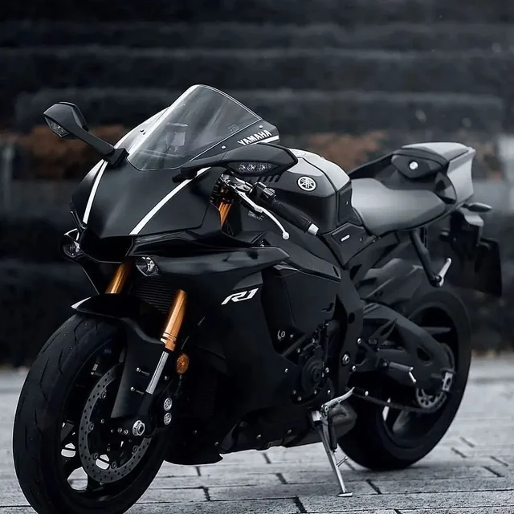
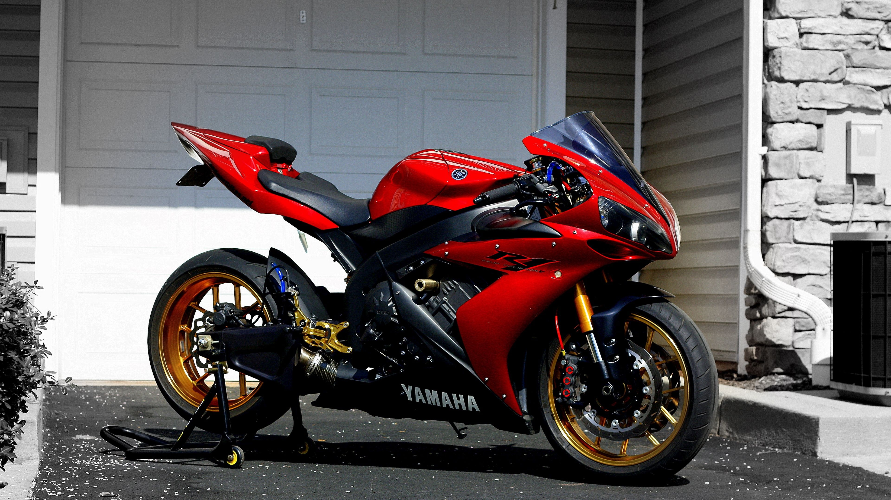
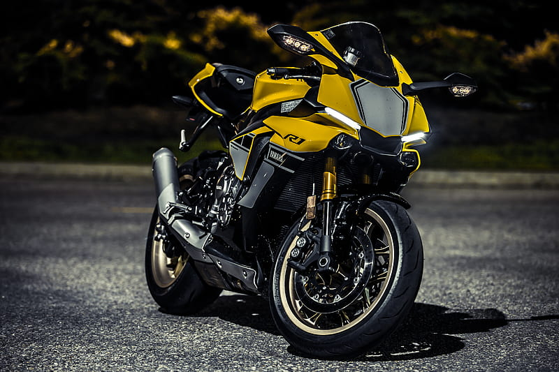

Galeria YZF R1



A Yamaha YZF R1 entrega tecnologia de MotoGP, design agressivo e performance extrema para quem busca adrenalina nas pistas e nas ruas.

998cc
200 CV
299 km/h
R$ 115 mil
A Yamaha R1 é uma superbike inspirada diretamente na MotoGP. Seu motor crossplane proporciona uma aceleração agressiva e controle excepcional em altas velocidades.
• Motor Crossplane CP4
• Controle de tração eletrônico
• Painel TFT digital
• Quick Shift System
• Aerodinâmica inspirada na MotoGP

